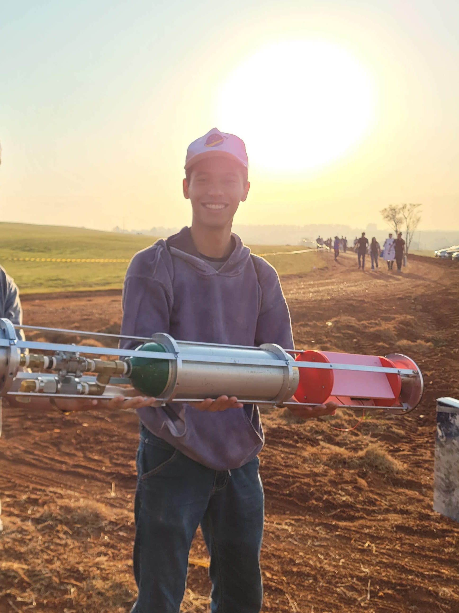
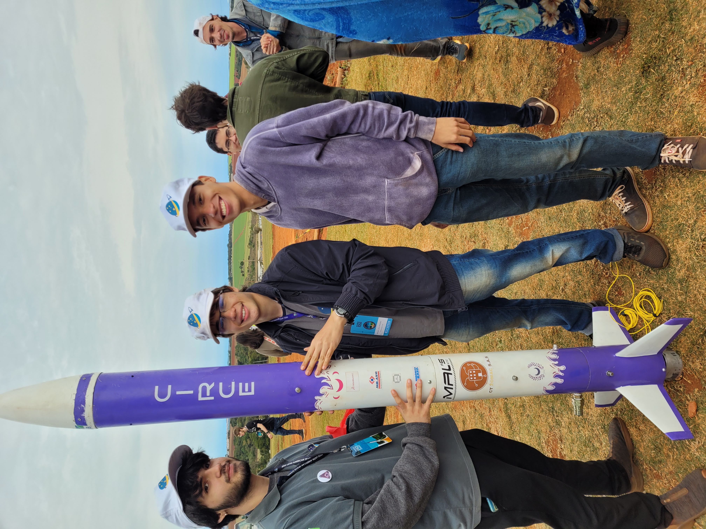
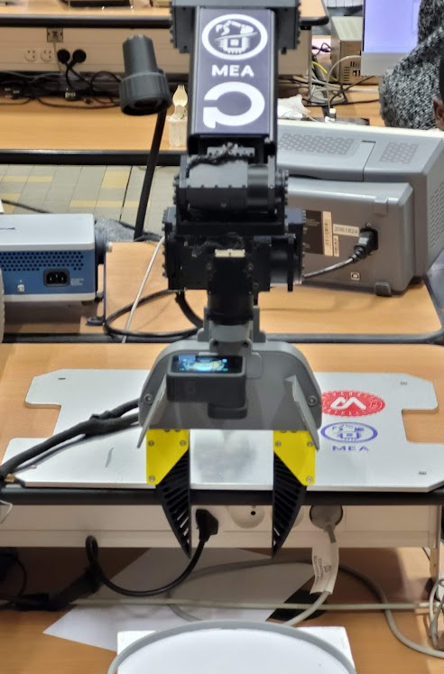
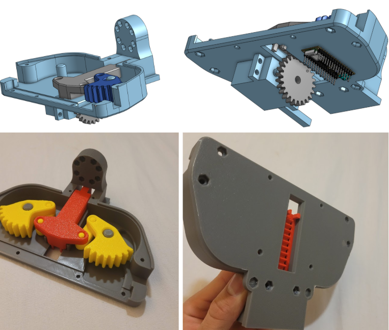
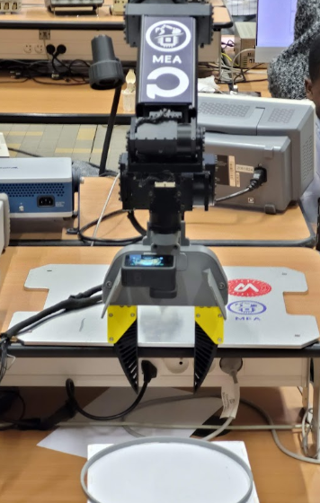
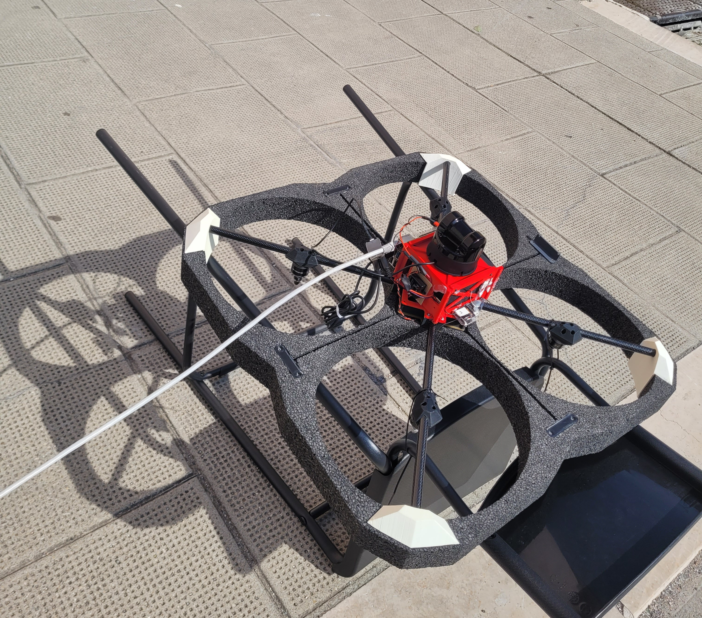
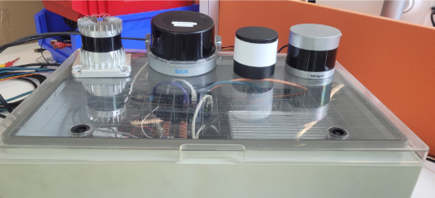

I hold a dual background in Aerospace Engineering (UnB 🇧🇷) and Microelectronics & Control (Polytech Montpellier 🇫🇷).
Currently, I am seeking an apprenticeship to support my one year Mastère in Space Systems Development (Bac+6) at CSUM (Centre Spatial Universitaire Montpellier). A great program that teaches skills in environmental testing (Vibration, Thermal Vacuum, RF) focused on nanosatellites and cleanroom procedures among other things. And that I'm eager to join.
My Past Projects CSUM Mastère program My CV

Led the mechanical isolation design for a hybrid rocket engine. Conducted hydrostatic test and participated in successful hot-fire testing. My team was the first in Latin America to launch a hybrid rocket in an international competition.
News Fire test


Developed a ROS2-based control system for a robotic arm using OpenCV and circular marker, implementing visual feedback and PID control loops. Also constructed and modified an open-source gripper.

Evaluated the integration of LiDAR sensors to enhance autonomous drone capabilities. Developed custom CAD mounting solutions and conducted flight tests to validate system stabilization. Modified a C++ plugin to simulate the LiDAR in gazebo. Deployed the Point-LIO algorithm in a warehouse environment, achieving centimeter-level SLAM precision through configuration and hardware integration.

Designed a data acquisition system for automotive sensors. Integrated multiple sensor inputs (Rotating LiDAR and Radar) into a synchronized Linux-based dashboard for live telemetry and download capabilities.